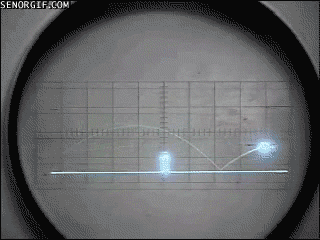
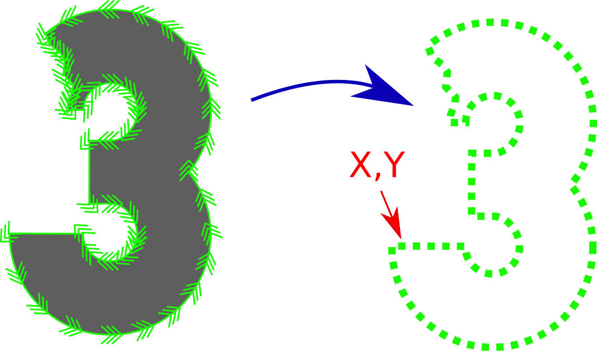
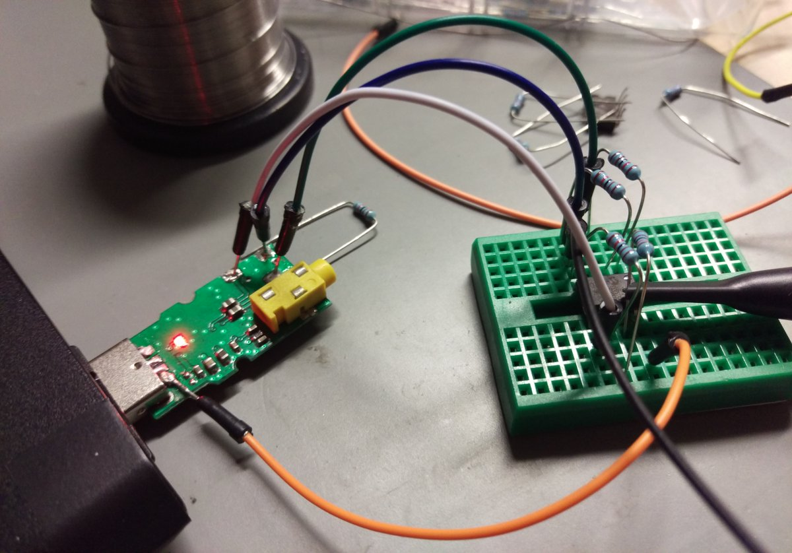
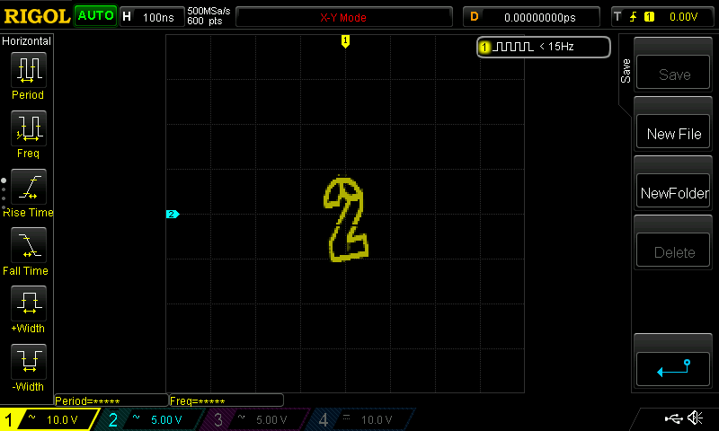

Browsers on Phosphor
Wie ich Bleepstrack's 36C3 Designgenerator auf ein Oszilloskop gebracht habe.
Eine kurze Reise von Vektorgrafiken in JS, über die Web Audio API bis zum XY-Modus eines Oszilloskops.
Reiseplan
- Departure 1958 - Tennis for two
- Wie funktioniert ein Oszilloskop?
- Zeichnen auf einem Oszilloskop
- Wie geht das mit JavaScript
- Prior Art
- Arrival 2019
Tennis for Two
Das wahrscheinlich erste grafische "Computerspiel"
Source: https://cheezburger.com/6770557696
Tennis for Two

Source: https://commons.wikimedia.org/wiki/File:Tennis_For_Two_re-created_in_1997.png
Oszilloskop

Source: https://commons.wikimedia.org/wiki/File:Cathode_ray_Tube.PNG
Demo Time
Wie werden aus Buchstaben diese Vektorpfade?
PaperJS is our friend
for (let offset = 0; offset < path.length;
offset += delta) {
const point = path.getLocationAt(offset).point;
x_path.push(point.x);
y_path.push(point.y);
}
Wie bekommt man die Pfade aus dem Rechner?
Es gibt eine funktionsreiche WebAudioAPI o.O
- Modulares Routing
- Input/Output Knoten
- Effekt Knoten
Also kann man im Browser Musik mischen (und nebenbei Bitcoins schürfen).
Wie bekommt man die Pfade aus dem Rechner?
Einfach die beiden Arrays reinkippen und auf Stereo kommts raus.
const aBuf = aCTX.createBuffer(2, 88200, audioCtx.sampleRate);
aBuf.copyToChannel(x_path,0);
aBuf.copyToChannel(y_path,1);
Einfach Tastköpfe an linken und rechten Kanal hängen.
Premium Version (nicht nötig): USB Soundkarte mit Verstärker und BNC
Warum Analog?
Prior Art
- Oscilloscope Music
- Audiovisuelle Kunst
- Youtube Videos
- Soundfiles
- Smarter Every Day Video
https://oscilloscopemusic.com/
https://oscilloscopemusic.com/
https://www.youtube.com/watch?v=TDiPibnHgW4
https://www.extremetech.com/wp-content/uploads/2014/12/Quake-Oscilloscope-640x353.jpg
https://www.kickstarter.com/projects/1474770115/the-oscilloscope-clock
Zurück in 2019
- quanten at ChaosZone
- Twitter: @quintusquanten
- DECT 6626
- 36C3 Wiki Project
- https://github.com/quantenProjects/36c3-generator
- https://github.com/quantenProjects/presentations-at-36c3